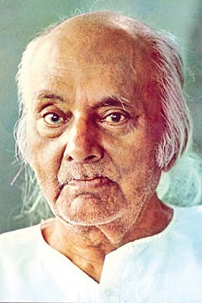

Rebel poet
Kazi Nazrul Islam is the national poet of Bangladesh who is especially recognized as a Bridohi
Kobi(rebel poet)around the country.Nazrul is a famous poet,musician and philosopher of
Bangladesh.The famous poet Nazrul's writings deal with the revolution of that period of the British
Government.His revolutionary attempt helped him to be a national poet of Bangladesh.He has raised
his voice against any kinds of fascism and oppression and got popularity swiftly around the Indian
subcontinent.
Awesome writer
Nazrul's writings explored themes such as love,freedom,humanity and
revolution.He opposed all forms of bigotry and fundamentalism,including religious,caste-based and
gender-based.Throughout his carrier,Nazrul wrote stories,novels,and essays but is best known for his
songs and poems.He pioneered new music forms such as bengali ghazals.Nazrul wrote and composed music
for nearly 4,000 songs(many recorded for HMV and gromophone records), collectively known as Nazrul's
Geeti.

About the author
Made by Md.Abu Taher for a
freecodecamp tribute challenge
Techs used
Sementic UI
Content Disclaimer
The content of this
website is mostly copied from Wikipedia,BiographyBD,Thefamouspeople.Origin credit goes to the
respective authors